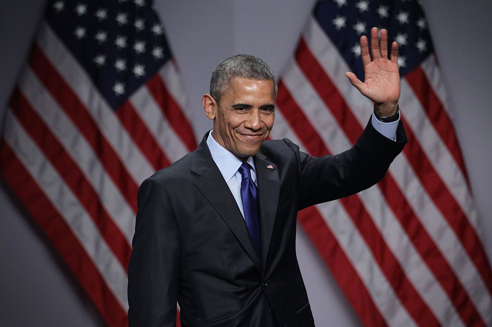
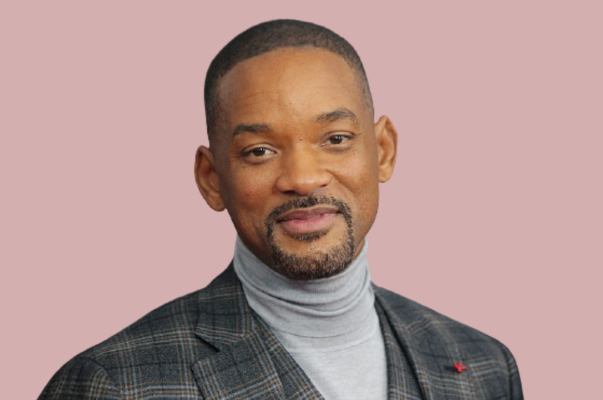

Barak Obama
Birthdate: 4 August 1961Birthplace: Kapiʻolani Medical Center for Women & Children, Honolulu, Hawaii, United States
Barack Hussein Obama II is an American politician and comes at the top of the list of popular celebrities. Stanley Ann Dunham, his mother, was a white American from Wichita, Kansas, and Barack Obama Sr., his father, was a black man from Alego, Kenya. As an active member of the Democratic Party, he was the first chosen African-American President of the United States and frequently made headlines with both his political career and personal life.
He served as the 44th President of the United States from the year 2009 to 2017.
Johnny Depp
Birthdate: 9 June 1963Birthplace: Owensboro, Kentucky, United States
John Christopher Depp II is an American actor, musician, and producer and is unquestionably one of the greatest and most popular celebrities of our generation. With performances such as Jack Sparrow, Willy Wonka, Edward Scissorhands, and Gellert Grindelwald in Fantastic Beasts, he has famously played weird, unique, and wacky roles and has been totally adored by everyone for them - he is regarded as one of the best celebrities to dress up as.

Lady Gaga
Birthdate: 28 March 1986Birthplace: Lenox Hill Hospital, New York, United States
Stefani Joanne Angelina Germanotta, professionally known as Lady Gaga, is an American singer, actress, songwriter, and does Deejaying. She is famous for her musical versatility and image reinventions - stunning (rather shocking) us with her extravagant attires, from egg incubators to meat dresses. Lady Gaga started performing when she was a mere teenager by acting in her school plays and singing at open mic nights. It definitely is hard to ignore her great talent when she has bagged twelve Grammy awards. Moreover, she sang the US Nation20al Anthem at the inauguration of POTUS Joe Biden.
Will Smith
Birthdate: 25 September 1968Birthplace: Philadelphia, Pennsylvania, United States
Who does not remember the hilariously infamous Oscar controversy? Will Smith trended in the early 2022s when he smacked Chris Rock in the face during the live event of the Oscar awards. Willard Carroll Smith II, or simply Will Smith, is also well-known by The Fresh Prince, his stage name. He is a renowned American actor, producer, and rapper and began his career as a fictionalized version of himself on The Fresh Prince of Bel-Air, an NBC sitcom. There is unquestionably no surprise that he was dubbed The most powerful actor in Hollywood in 2007 by Newsweek.
